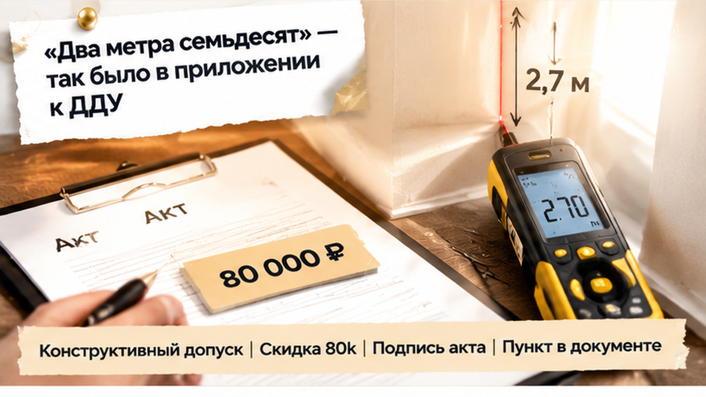
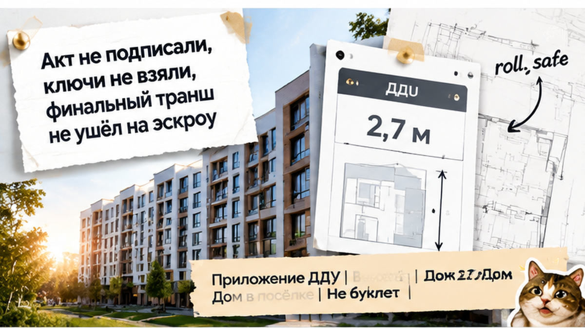
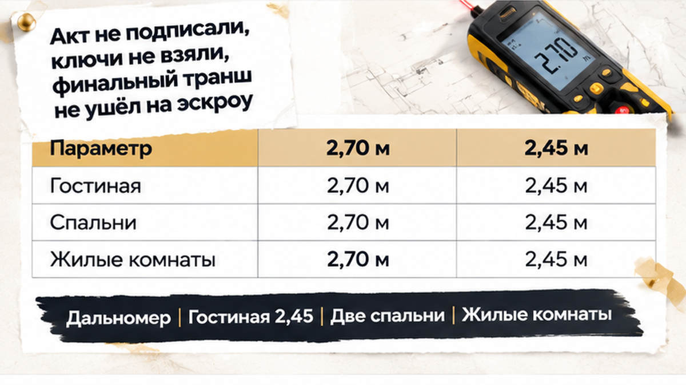
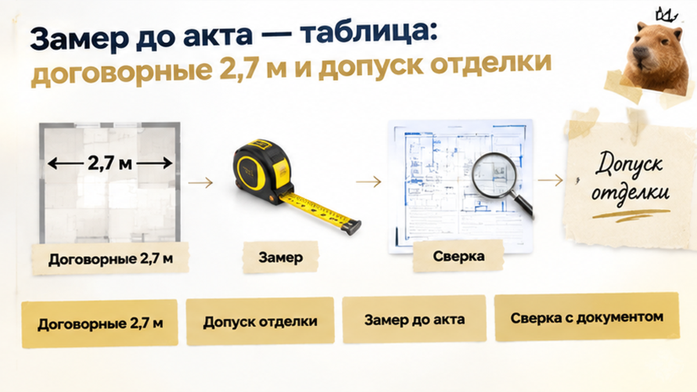

В день передачи дома в КП под Тюменью потолки оказались на 25 см ниже обещанного — семья с двумя детьми остановила приёмку перед подписью акта. Покупатели приехали за новым домом от застройщика, а получили вопрос, который скидкой с порога не закрыть. В приложении к договору была указана одна высота, на дисплее лазерного дальномера — другая. Передаточный акт лежал на столе, но подписывать его, пока расхождение не объяснили, семья не стала. Сначала нужно было понять, что им передают: дом по договору или дом, к которому теперь предлагают привыкнуть.
Я Святослав Шакин, The Риэлтор, Тюмень. Разбираю покупку домов от застройщиков так, чтобы за красивым показом были видны условия сделки. Мои разборы — в Telegram и MAX.

У семьи было на что опереться: 2,7 метра стояли в приложении к ДДУ — договору долевого участия. Не на картинке с просторной гостиной, не в рекламном буклете и не в устном обещании менеджера. Высота была частью документов, по которым покупатели согласились приобретать дом. Поэтому разговор начинался не с «нам кажется тесно», а с конкретного условия.
Да, индивидуальный дом в коттеджном посёлке тоже может продаваться по ДДУ, если это малоэтажный жилой комплекс. Но три буквы на обложке сами по себе не описывают будущие комнаты. Нужны приложение, спецификация, формулировки о том, какой именно дом передаёт застройщик. Покупатель обычно смотрит на планировку и представляет, где будет стоять мебель; я при проверке документов смотрю ещё и на то, чем эти ожидания подкреплены.
С высотой есть важная тонкость: от плиты до перекрытия и от готового пола до готового потолка — не одно и то же. Отделка занимает место, и сравнивать нужно одинаковые величины. Если в документе речь о черновом состоянии, а прибор стоит на чистовом полу, это надо учитывать, а не пропускать ради убедительного спора.
Та же развилка была в истории, где в ДДУ обещали чистовую отделку, а на приёмке оказались голые стены. Вопрос не в том, кому какая комната нравится. Вопрос в том, что застройщик обязался передать и что предъявил покупателю.
Первый результат получили в гостиной. Затем проверили две спальни — показания повторились, так что дело не сводилось к одной неудачной точке. Это были жилые комнаты, а не коридор, где требования к высоте могут отличаться. Теперь застройщику нужно было объяснить расхождение именно там, где семья собиралась жить.
Прибор переводит разговор из «вроде низковато» в цифры, но сам по себе спор не решает. На фотографии можно показать дисплей и не показать, откуда мерили. Поэтому важны обе границы замера: какой пол внизу, какой потолок наверху. Иначе одна сторона будет говорить о готовой комнате, другая — о конструкции до отделки.
Для меня здесь принципиальна разница между впечатлением и проверкой. Впечатление легко оспорить словами «вам просто непривычно», а несколько замеров нужно сопоставлять с документом. Семья уже увидела, что результат повторяется в разных комнатах. Следующий вопрос был к представителю застройщика: чем он объясняет отличие от приложения к договору?
Представитель застройщика с показаниями дальномера спорить не стал. Объяснение прозвучало коротко: «Конструктивный допуск». Следом появилось предложение — скидка 80 тысяч рублей, если семья сразу подпишет передаточный акт. То есть разбираться с высотой предлагали уже не по приложению к договору, а через сумму, за которую покупатели готовы принять отличие.
На слух «допуск» звучит убедительно: дом ведь строят, а не печатают на принтере. Но профессиональный вопрос здесь простой: где записано, что такое отклонение разрешено? Нужен пункт документа, а не уверенность человека за столом. Пока его нет, красивое техническое слово само по себе ничего в договоре не меняет.
При этом сравнивать надо одинаковые вещи. Высота от плиты до перекрытия и расстояние от готового пола до готового потолка — не одно и то же. Поэтому в приложении важно прочитать не только цифру, но и соседние строки: какое состояние дома описано, откуда считается высота, какие есть оговорки. Иначе покупатель и застройщик могут говорить о разных замерах, каждый со своей правдой.
С допусками отделки другая история: они касаются ровности поверхности и измеряются миллиметрами. Небольшая неровность потолка не объясняет, почему комната целиком стала ниже на четверть метра. Есть и нормативные требования к высоте жилых комнат и кухни в одноквартирных домах, но здесь у семьи была прямая опора — характеристика, записанная в приложении к ДДУ. Начинать разговор следовало с неё, а не со спора, насколько низкий потолок вообще удобен для жизни.
Сама скидка тоже не отвечает на вопрос, выгодно ли соглашаться. Для этого нужны цена дома, точные условия договора и понимание того, с чем покупателю потом жить. Восемьдесят тысяч — предложение застройщика, а не готовая оценка потери. Та же разница между словами и документами видна при сверке проектной декларации до ДДУ: обещание в офисе не заменяет записанное условие.


Семья на предложенную скидку не согласилась. Передаточный акт остался без подписи, ключи покупатели не получили. В этой сделке финальный транш на эскроу тоже не перевели: передача остановилась до этого платежа. Покупатели не стали закрывать вопрос только потому, что представитель уже назвал объяснение и сумму.
Здесь нельзя выводить правило «не подписал акт — можно не платить». Сроки и порядок платежей нужно смотреть в своём договоре, отдельно от порядка передачи дома. Эскроу — счёт, где деньги ждут выполнения предусмотренных условий, а не универсальная кнопка отмены сделки. В истории про замороженные деньги при задержке новостройки разбирается именно эта сторона покупки: дом, ключи и доступ к деньгам связаны условиями документов.
Остановка передачи оставляла время перевести спор из устного разговора в письменный. Не просто сказать «нас не устраивает», а обозначить комнаты, точки замера и условие приложения, с которым результат расходится. Можно было потребовать акт о недостатках или внести замечания в документы передачи. При отказе представителя подписывать замечания — сохранить собственную фиксацию, фотографии, видео и переписку; утверждать, что всё это семья уже сделала, оснований нет.
Отдельно стоило держать в голове, какие деньги уже внесены и какие ещё только предстоит перечислить. Задаток и платёж на эскроу — не одна сумма под разными названиями. Поэтому и одобренная ипотека при ещё не открытом эскроу требует отдельной проверки: согласие банка не означает, что вся цепочка покупки уже готова.
Через девять дней после несостоявшейся передачи застройщик вернул семье 250 000 рублей задатка. До регистрации права дело не дошло. Семья вышла из этой покупки, а не осталась с домом, в котором каждый день пришлось бы смотреть на потолок и вспоминать предложенную скидку.
Здесь важно назвать деньги правильно: вернули именно задаток, не средства с эскроу. Финальный платёж на этот счёт покупатели не переводили. Это результат конкретной сделки, а не обещание, что в любом споре застройщик вернёт деньги за девять дней.
Предложенные восемьдесят тысяч могли стать предметом переговоров, но семья не обязана была соглашаться на них у стола с актом. Сама по себе скидка не объясняла расхождение с договором. Покупатели не приняли предложенный обмен: меньше высоты — меньше цена, зато подпись прямо сейчас.
Согласились бы вы принять дом с потолками на 25 см ниже договорных за скидку 80 тысяч рублей — или отказались бы от сделки?

Здесь достаточно одного различия. Высота в приложении к ДДУ — это то, какой дом вам обязались передать. Допуск отделки — насколько поверхность может отклоняться от ровной плоскости. Второе не заменяет первое: объяснение представителя нужно сверять с документом, а не принимать только потому, что оно звучит по-строительному.
| Что сравниваем | Договорные 2,7 м | «Допуск отделки» |
|---|---|---|
| Где искать | В ДДУ, приложении, спецификации или другом документе, на который ссылается договор | В требованиях к ровности и качеству отделочных работ |
| Что означает | Заданную характеристику помещения, с которой сравнивают фактический результат | Допустимое отклонение поверхности от ровной плоскости |
| Порядок величины | 2,7 м по договору; фактический замер — 2,45 м | Обычно миллиметры, а не десятки сантиметров; для отдельных показателей около 8–15 мм |
| Что уточнить при замере | От какого пола и до какого потолка считается высота; относится ли условие к конкретной комнате | Какая поверхность проверяется, каким инструментом и по каким точкам |
| Что делать при расхождении | Сделать несколько замеров, записать точки, приложить фото или видео и подать письменные замечания до акта | Не использовать этот термин как объяснение расхождения на 25 см без проверки и документа |
Но и сравнивать нужно одинаковые вещи: расстояние от готового пола до готового потолка — не то же самое, что от плиты до перекрытия. Поэтому в записи замеров нужны комнаты, точки и поверхности, между которыми измеряли высоту; на фото или видео — помещение и показания прибора. Эти материалы вместе со ссылкой на приложение к договору стоит приложить к письменным замечаниям до подписания акта. Если представитель отказывается подписывать документ о несоответствии, сохраните подтверждение, что замечания ему направили.
Дальше решение зависит от договора и самого расхождения: обсуждать устранение, уменьшение цены или прекращение покупки. Ни размер скидки, ни возможность вернуть деньги нельзя честно обещать по одной фотографии дальномера. А устное «мы потом всё учтём» лучше не оставлять единственным основанием для подписи.
В Telegram и MAX разбираю покупки новостроек и домов от застройщиков простым языком. Что обещали, что записали и что предлагают подписать — именно на этих различиях часто держится решение покупателя. Подписывайтесь, если хотите видеть их до передачи ключей.
Эта семья осталась без выбранного дома, зато вернула задаток и не приняла условия, которые её не устраивали. Проверка не сделала потолки выше — она оставила возможность остановиться. Для меня в сопровождении важно именно это: чтобы человек понимал, за что платит, пока у него ещё есть выбор, а не разбирался с обещаниями после подписи.